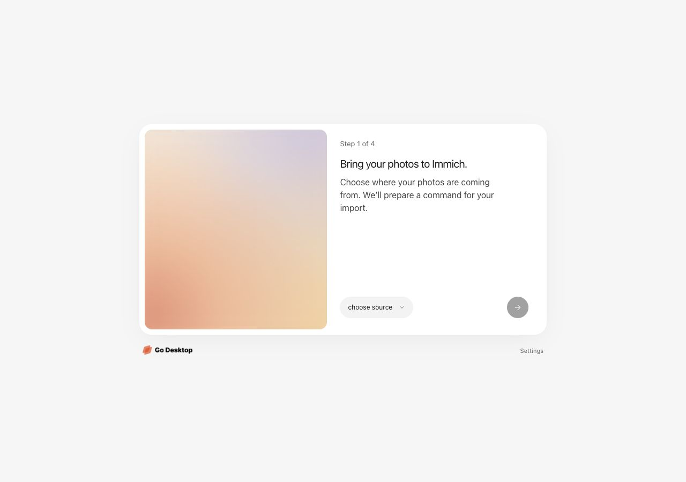
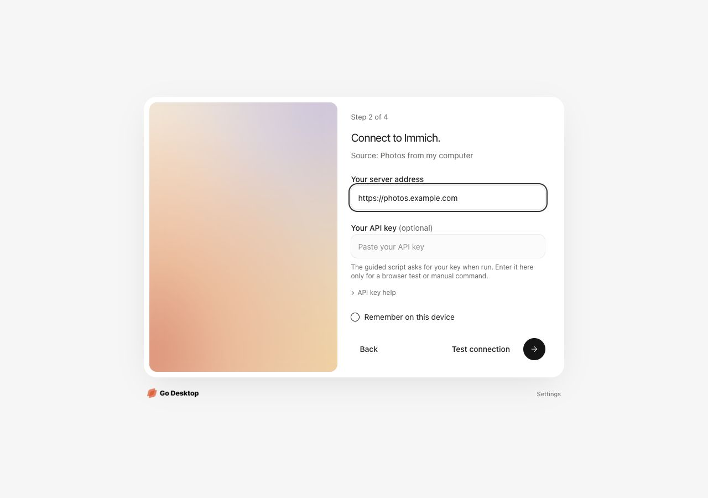
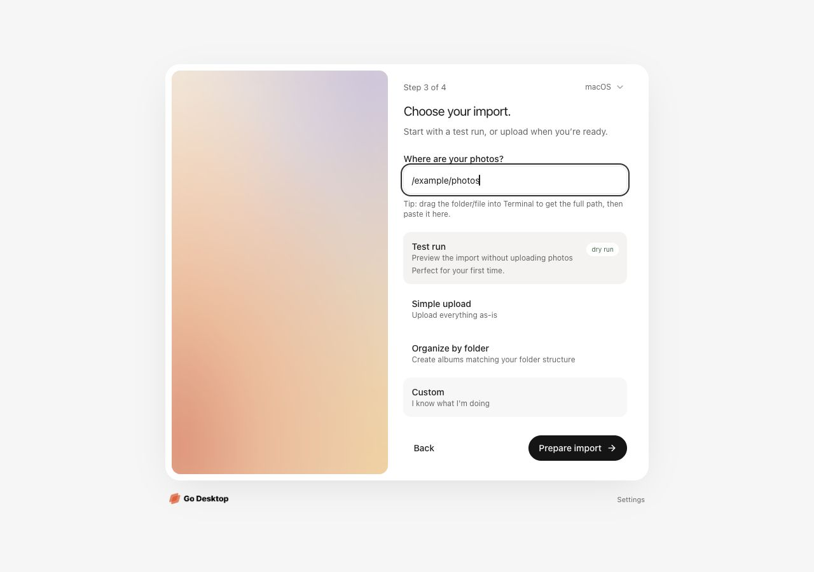
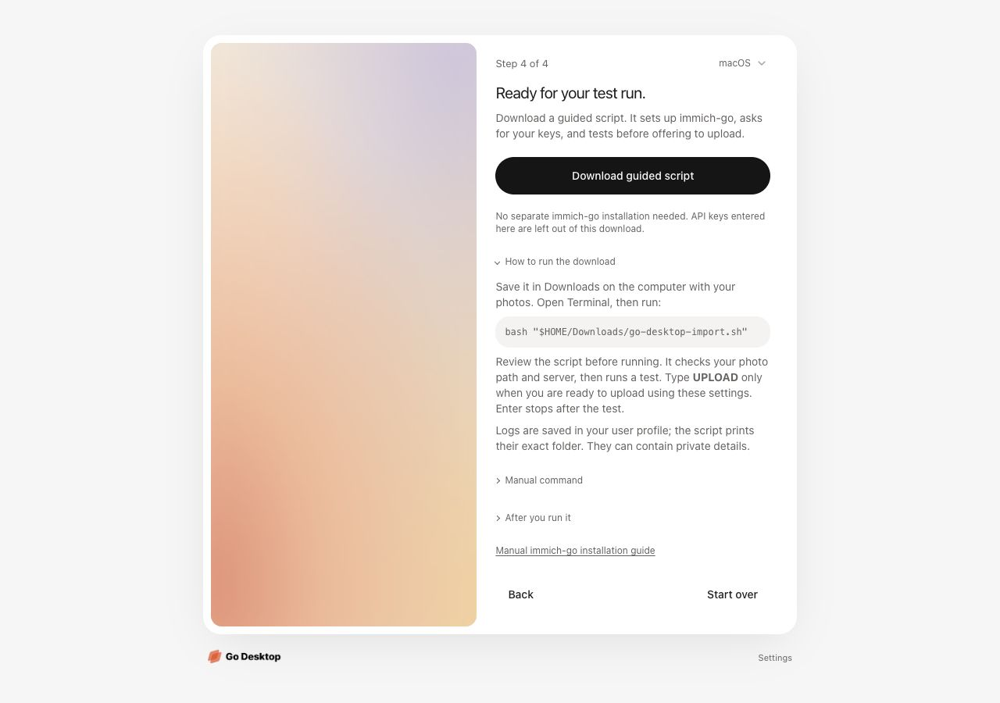
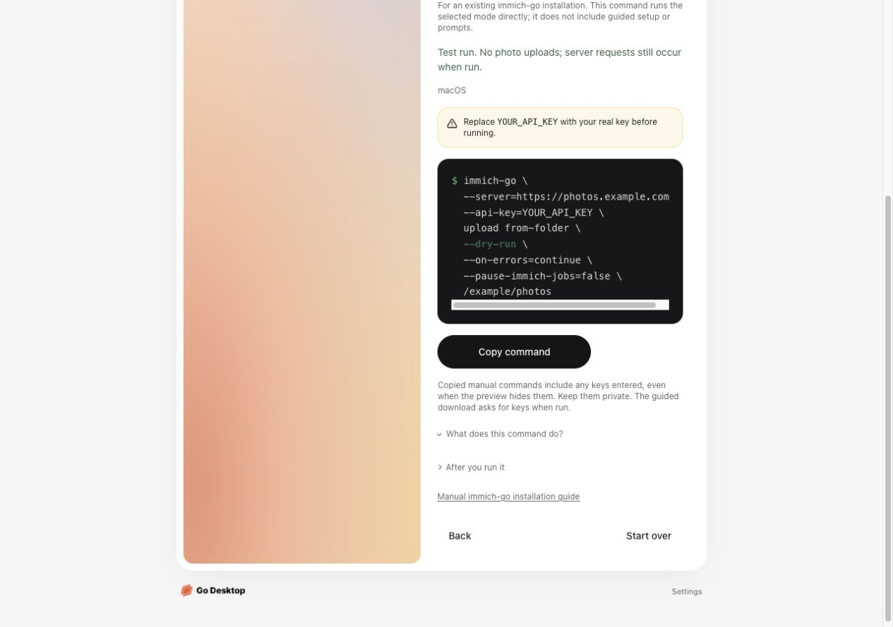

The import process
Four steps from the current local app, using a folder import and example details. No connection test or import was run. Click any screenshot to open it at full size.
1. Choose a source
Pick a photo folder, Google Takeout, iCloud export, or another Immich server.

2. Connect to Immich
Enter the destination address. The API key and browser connection test are optional.

3. Choose your import
Add the photo path and choose a test run, simple upload, folder albums, or custom options.

4. Download the guided script
Setup, hidden key prompts, a test, and explicit upload confirmation happen when the script is run separately. Manual commands remain optional.

See the manual command option
Manual commands keep their selected mode and require an existing immich-go installation. They include any keys entered in the form.
